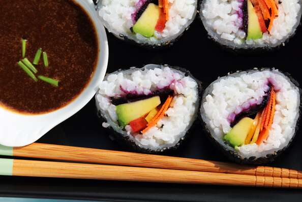

Vegetarian Sushi

Home Made Vegetarian Sushi bowls
These are much easier to make since no rolling is involved. In addition, one can get more creative
with toppings since there are no limitations to options that roll up well.
Ingredients
- 1 cup uncooked short-grain white rice
- 1 cup of water
- 2 teaspoons white sugar
- 1 teaspoon salt
- 1 avacado-peeled, pitted and thhinly sliced
- 1 teaspoon lemon jice
- Half cucumber-peeled ,seesed and cut into matchsticks
- Half zucchini, cut into matchsticks
Steps
- Place rice and water in a saucepan over high heat, bring to a boil, and reduce heat to very low. Cover with a tight-fitting lid and simmer rice until water is absorbed, about 15 minutes. Remove rice from heat and allow to stand covered for 10 minutes.
- In a bowl, whisk together the red wine vinegar, sugar, and salt until the sugar has dissolved. Transfer rice to a large mixing bowl and fluff with a fork; pour vinegar mixture over rice and swirl to coat. Place the rice on a wide piece of parchment paper and fan it until it cools. Wet paper towels should be used to cover the rice.
- Sprinkle avocado slices with lemon juice in a bowl.
- Spread a thin layer of sesame seeds onto a sushi mat. Pick up about half a cup of cooled rice and place onto sushi mat in an even layer. Place 1/4 of the cucumber, avocado slices, bell pepper, and zucchini in a line down the middle of the rice.
- Pick up the edge of the sushi mat, fold the bottom edge of the sheet up, enclosing the filling, and tightly roll the sushi into a thick cylinder. Once the sushi is rolled, wrap it in the mat and gently squeeze to compact it tightly. Repeat with remaining ingredients to made 4 rolls. Place rolls on a serving plate, slice into 6 or 8 pieces per roll, and cover with damp paper towels until serving time.